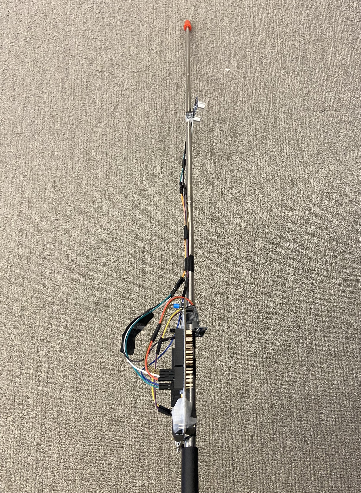

Assistive Cane
Embedded Systems Project
Project Visuals

Assistive Cane Subsystems
Overview
The system is an assistive navigation cane for the visually impaired, implemented on an STM32 Nucleo-F446RE board running at 168 MHz. The cane uses two hardware subsystems to sense its environment: an HC-SR04 ultrasonic transceiver measures the distance to obstacles ahead, and a BNO055 absolute orientation IMU measures the cane's tilt (roll and pitch) over I2C. The raw distance reading is geometrically corrected using the forward tilt angle to yield the true horizontal distance to the obstacle. This corrected distance is then classified by a debounced zone state machine into one of four states: CLEAR (>200cm), FAR (120-200 cm), MID (50–120 cm), and NEAR (<50 cm). Each state triggers a distinct pre-recorded audio cue streamed from flash memory through the STM32's onboard 12-bit DAC to a passive speaker, giving the user real-time directional awareness.